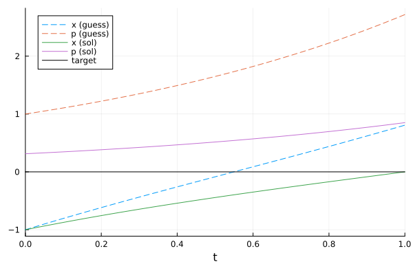

MAM5-INUM - Commande optimale
TP 2 - Tir simple
On considère le problème de contrôle optimal suivant :
\[ \frac{1}{2} \int_0^1 |u(t)|^2\,\mathrm{d}t \to \min \]
sous les contraintes
\[ \dot{x}(t) = -x(t)+u(t),\quad u(t) \in \mathbf{R},\quad t \in [0,1], \]
\[ x(0)=-1,\quad x(1)=0. \]
Résoudre le problème numériquement à l'aide d'une méthode de tir.
Principe de maximum et fonction de tir
Pas de contrainte sur le contrôle et pas d'état final libre, donc pas de cas anormal à craindre ici : on prend \(p^0=-1\). Le pseudo-Hamiltonien est
\[ H(x,p,u) = p\,(-x+u) - \frac{1}{2}u^2. \]
Il est strictement concave en \(u\) et le maximum est atteint en \(u(x,p)=p\). Le Hamiltonien maximisé vaut donc
\[ h(x,p) = \max_{u \in \mathbf{R}} H(x,p,u) = \frac{p^2}{2} - p\,x. \]
Les extrémales sont les solutions de \(\dot{x} = \partial_p h\), \(\dot{p} = -\partial_x h\), avec \(x(0)=-1\) et \(p(0)=p_0\) inconnu. La condition finale \(x(1)=0\) donne l'équation de tir
\[ S(p_0) = x(1,x_0,p_0) - x_f = 0. \]
Vérification analytique. Ici \(\dot{p}=p\), donc \(p(t)=p_0\mathrm{e}^t\), puis \(x(t) = -\mathrm{e}^{-t} + p_0\sinh t\). La condition \(x(1)=0\) donne
\[ p_0 = \frac{2}{\mathrm{e}^2-1} \approx 0.3130, \qquad u(t)=p_0\mathrm{e}^t, \qquad \text{coût optimal } \frac{1}{\mathrm{e}^2-1} \approx 0.1565. \]
La fonction de tir est affine en \(p_0\) (système linéaire-quadratique) : Newton converge en une itération, ce que l'on observe dans la trace du solveur.
Code
using OptimalControl, OrdinaryDiffEq, NonlinearSolve, Plots
t0 = 0.0
tf = 1.0
x0 = -1.0
xf_fixed = 0.0 # target
# Maximised Hamiltonian, with u = p: h(x, p) = p * (-x + u) - u^2 / 2
h(x, p) = p * (-x + p) - p^2 / 2
# Makes flow from Hamiltonian
f = Flow(OptimalControl.Hamiltonian(h)) # (xf, pf) = f(t0, x0, p0, tf)
# Shooting function: in-place, with the signature (s, p0, parameters) required by NonlinearSolve
function shoot!(s, p0, parameters)
xf, pf = f(t0, x0, p0[1], tf)
s[1] = xf - xf_fixed
end
# Solve
p0_guess = 1.0 # initial guess
prob = NonlinearProblem(shoot!, [p0_guess])
sol_nl = solve(prob; show_trace=Val(true))
SciMLBase.successful_retcode(sol_nl) || error("NonlinearSolve did not converge")
p0 = sol_nl.u[1]
# Check against the exact value p0 = 2 / (exp(2) - 1)
p0_exact = 2 / (exp(2) - 1)
println("p0 = ", p0)
println("p0 (exact) = ", p0_exact)
println("|p0 - p0_exact| = ", abs(p0 - p0_exact))
# Plots
guess = f((t0, tf), x0, p0_guess)
fig1 = plot(guess, xlabel="t", label=["x (guess)" "p (guess)"], linestyle=:dash)
traj = f((t0, tf), x0, p0)
plot!(fig1, traj, label=["x (sol)" "p (sol)"], linestyle=:solid)
plot!(fig1, [t0, tf], [xf_fixed, xf_fixed], label="target", colour=:black)
# Cost: u = p, so J = 1/2 * int_0^1 p(t)^2 dt (trapezoidal rule)
ts = range(t0, tf, length=1001)
ps = [traj(t)[2] for t in ts]
J = (ts[2] - ts[1]) * (sum(abs2, ps) - (ps[1]^2 + ps[end]^2) / 2) / 2
println("cost J = ", J, " (exact: ", 1 / (exp(2) - 1), ")")
# Save the figure
savefig(fig1, "tp2-sol.png")